# 说在前头
将所有的源码文件全部添加进工程这行为或许有人觉得会严重的增加目标文件的大小，但实际上并不会增加编译后的目标文件大小，只是会使编译过程稍微久一点。
编译阶段编译器会将所有在工程里面的源文件编译成 .o 二进制文件。但在链接阶段，链接器只会将用到的函数对应的 .o 文件链接起来，没有用到的 .o 文件并不会链接进目标文件内，对这方面感到疑惑的可以看去 C/C++ 的编译过程。
# 对于各种工程 （包括非 STM32 的 C/C++ 工程）
多余添加源码文件进编译：
绝大部分情况下是没问题的，不被调用的函数 链接器 不会使用 那个函数所在的 .o 文件。多余添加源码文件的影响只有增加编译时间、产生多一点的 .o 文件占用电脑硬盘，最终编译出来的目标文件即烧录进 STM32 的那个文件保持不变。
极少数情况下，多添加文件进行编译会产生冲突，比如 STM32F429 的 FMC 和 FSMC 源文件，同时只能编译一个，这还可能是 库文件设计者 有意为之。
少添加源码文件进编译：
必定出问题，找不到头文件、函数未定义、符号未定义 等等。
# 环境介绍
本人使用的代码编写环境：VScode + stm32cubemx + EIDE + clangd
由于实在忍受不了 keil 那沟槽的编辑器，所以在知道了 EIDE 能直接导入 keil 还有 cubeIDE 的工程之后果断地选择跑回了 vscode .jpg
顺带一提最近看到有大佬在 vscode 上整了个支持 vivado 的插件，也就是说现在你还能在 vscode 上写 FPGA 的代码了。真就一个 vscode 写全部（
# 前期准备（默认你各种工具都有了.jpg）
# 获取 LVGL 源码
LVGL 源码仓库地址：https://github.com/lvgl/lvgl
你可以使用 git 将整个项目 clone 下来，或者你也可以在右上方点击 code 然后选 Download ZIP 把源码下载下来：
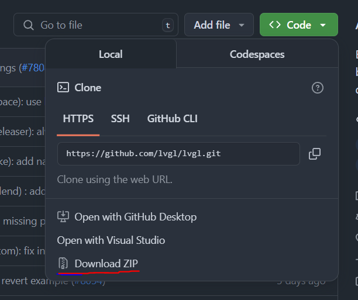
想要不同的版本的话也可以在左上角切分支到不同的 Releases 版本，或者直接从右侧的 Releases 内下载不同版本的源码：

# LVGL 源码文件夹如下图：
不管版本如何变，移植到 STM32 (用 Keil 编译) 时，src 文件夹和 源码根目录 下的 .h 、.c 文件都一概先复制过去。

# 新建工程
这边我们使用 cubeMX 新建一个 STM32 的工程
运行 LVGL 的最低要求：

实际如果你跑 demo 里面的 bunchmark 的话上面的要求完全不够用（

我这边使用的 mcu 是 stm32f412rgt6，在 cubemx 里面选择 stm32f412rgt，然后按照自己的需求把外部高速晶振打开，主频拉到最大，使用 SPI1，并把 SPI1 的中断和 DMA 给打开


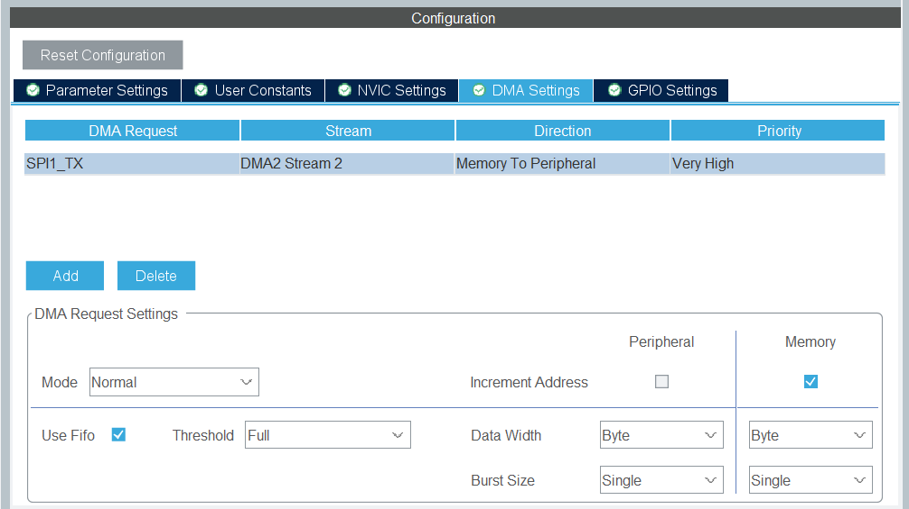
工程设置界面的工具链选择 STM32CubeIDE，在设置完工程之后就可以生成代码了，生成代码时个人推荐选择为不同的外设生成不同的 .c/.h 文件，这样代码不用一股脑的全扔进 main.c 里面，能更方便管理。另外注意堆栈要开大一点，默认的堆栈大小跑 lvgl 可能会炸
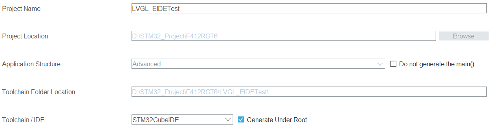
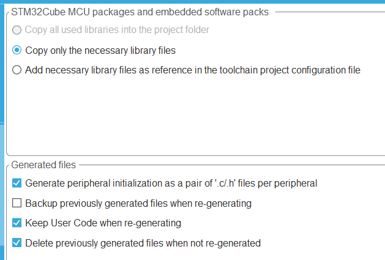
(注意我这边选的是 copy only necessary library files)
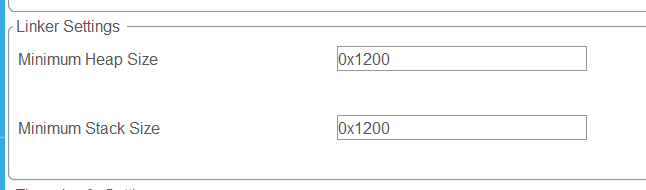
# 代码移植
# 移植 LVGL
工程创建好后我们先在工程根目录创建 lvgls 文件夹，里面新建两个文件夹，分别为存放 lvgl 代码的 lvgl 文件夹和存放自己写的 lvgl 相关代码的 lvgl_app 个人文件夹，不过后者本次工程没用到，也可以不创建
# 项目内 lvgl 源码文件夹
LVGL 源码文件夹 下的 demos、src 文件夹 直接原封不动复制到 lvgl 文件夹下。
LVGL 源码文件夹 下的 examples 文件夹也可以直接原封不动复制过来，但实际只需要里面的 porting 文件夹，所以自己精简。
LVGL 源码文件夹 根目录的 .c 、.h 文件一并复制到 lvgl 下。
搞定上面的步骤后，lvgl 下的 lv_conf_template.h 复制到上一层目录 （即 lvgls 中），并改名为 lv_conf.h 。
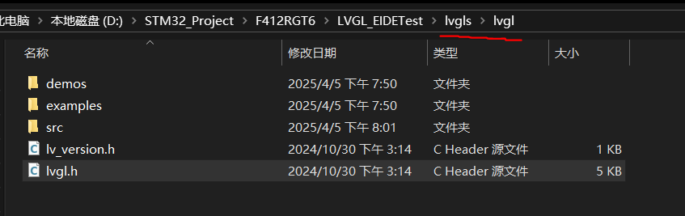
将 lvgl /examples/porting 中选中的文件复制到 与 lv_conf.h 文件同一目录下，并把 template 字眼去掉。分别是 （ **disp ）显示 设备和 （**indev ）输入设备的接口。
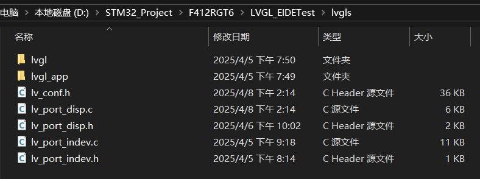
# 导入项目到 EIDE
在 vscode 内打开 EIDE，选择导入项目，在中间弹出的选项里面选择 Eclipse

然后选择你工程根目录下的.cproject
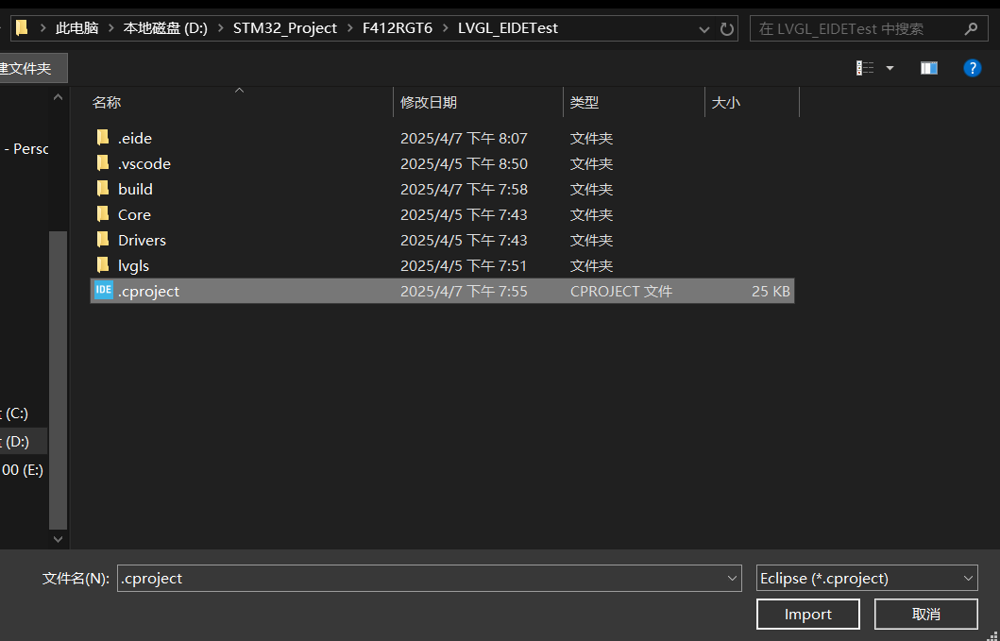
导入完成后，切换 VSCode 工作区
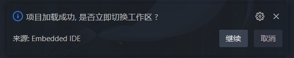
由于 Eclipse CDT 和 EIDE 之间的设计差异，EIDE 暂时不能兼容 Eclipse 项目中的一些项目属性和构建设置
导入完成后，将生成一个 .warning.txt 文件，其中记录了所有不兼容的 Eclipse 项目属性
您需要根据这些属性的 名称 和 值 的含义修改 EIDE 项目的 构建器选项，直到可以正确编译
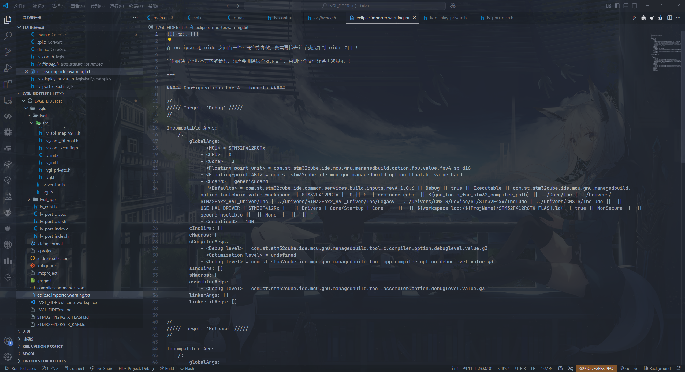
正常情况下我们只需要改这几个就差不多了.jpg

# LVGL 文件添加进工程
如图.jpg


添加项目属性内的包含目录时的偷懒办法：


在这里面你可以直接将包含目录直接复制粘贴进去
如果你的 lvgl 文件位置和文件夹名称和我的一样，就可以啥也不改，直接黏贴。
- Core/Inc | |
- Drivers/STM32F4xx_HAL_Driver/Inc | |
- Drivers/STM32F4xx_HAL_Driver/Inc/Legacy | |
- Drivers/CMSIS/Device/ST/STM32F4xx/Include | |
- Drivers/CMSIS/Include | |
- lvgls | |
- lvgls/lvgl | |
- lvgls/lvgl/src | |
- lvgls/lvgl/src/core | |
- lvgls/lvgl/src/display | |
- lvgls/lvgl/src/draw | |
- lvgls/lvgl/src/drivers | |
- lvgls/lvgl/src/font | |
- lvgls/lvgl/src/indev | |
- lvgls/lvgl/src/layouts | |
- lvgls/lvgl/src/libs | |
- lvgls/lvgl/src/misc | |
- lvgls/lvgl/src/osal | |
- lvgls/lvgl/src/others | |
- lvgls/lvgl/src/stdlib | |
- lvgls/lvgl/src/themes | |
- lvgls/lvgl/src/tick | |
- lvgls/lvgl/src/widgets | |
- lvgls/lvgl/demos | |
- lvgls/lvgl/demos/benchmark | |
- lvgls/lvgl/demos/widgets | |
- lvgls/lvgl/demos/scroll | |
- lvgls/lvgl/demos/music | |
- c:/ST/STM32CubeCLT_1.16.0/GNU-tools-for-STM32/arm-none-eabi/include |
# LVGL 设置
# 给 LVGL 加心跳
伴随 HAL_IncTick (); 所在位置，本例是 stm32f4xx_it.c 文件中：
#include "lv_tick.h" | |
/**** 其它 ******/ | |
void SysTick_Handler(void) | |
{ | |
HAL_IncTick(); | |
lv_tick_inc(1); | |
} |
当然也可以 改为 选择在 定时器中断中 执行 lv_tick_inc(1);
# lv_conf.h 中：
打开 lv_conf.h ，把 第一个 # if 0 改为 # if 1 从而使能文件，下文简称 使能文件。
文件中 #define LV_COLOR_DEPTH 16 是配置屏幕色彩深度、我的 LCD 屏幕是 RGB565 , 所以保持无需变更。
有使能 demo 的宏，本例跑 bunchmark 例子，所以使能：

(bunchmark 要求将 WIDGETS 也打开)
# lv_port_disp.c 中：
使能文件后（注意，对应的头文件也要使能）添加需要的屏幕驱动的头文件，并修改分辨率适配自己的屏幕
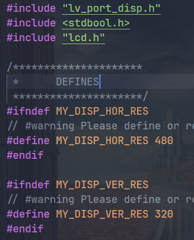
修改 lv_port_disp_init() 函数，分配内存，由于我们需要使用 DMA 来进行数据传输，所以使用模板的 Example 2
LV_ATTRIBUTE_MEM_ALIGN | |
static uint8_t __attribute__((section(".ccmram"))) buf_2_1[MY_DISP_HOR_RES * 10 * BYTE_PER_PIXEL]; | |
LV_ATTRIBUTE_MEM_ALIGN | |
static uint8_t __attribute__((section(".ccmram"))) buf_2_2[MY_DISP_HOR_RES * 10 * BYTE_PER_PIXEL]; | |
lv_display_set_buffers(disp, buf_2_1, buf_2_2, sizeof(buf_2_1), LV_DISPLAY_RENDER_MODE_PARTIAL); |
修改 disp_flush() 函数，这个函数是 LVGL 用来向屏幕写数据的函数（刷屏函数），所以需要根据对应的屏幕编写对应的代码，本例的代码如下：
static void disp_flush(lv_display_t *disp_drv, const lv_area_t *area, uint8_t *px_map) | |
{ | |
if (disp_flush_enabled) { | |
uint64_t totalSize = (area->x2 - area->x1 + 1) * (area->y2 - area->y1 + 1) * BYTE_PER_PIXEL; | |
while (HAL_SPI_GetState(&hspi1) != HAL_SPI_STATE_READY) {} | |
LCD_SetWindows(area->x1, area->y1, area->x2, area->y2); | |
LCD_CS_CLR; | |
LCD_RS_SET; | |
HAL_SPI_Transmit_DMA(&hspi1, (uint8_t *)(px_map), totalSize); | |
} | |
/*IMPORTANT!!! | |
*Inform the graphics library that you are ready with the flushing*/ | |
// lv_display_flush_ready(disp_drv); | |
} | |
void HAL_SPI_TxCpltCallback(SPI_HandleTypeDef *hspi) | |
{ | |
LCD_CS_SET; | |
LCD_SetWindows(0, 0, lcddev.width - 1, lcddev.height - 1); | |
lv_display_flush_ready(disp); | |
} |
# lv_port_indev.c 中：
使能文件、添加必要的 触摸屏头文件如 #include "touch.h"
函数 lv_port_indev_init 中仅保留 touchpad 部分的代码，其他代码可以注释掉或者删除
然后修改 touchpad_read() touchpad_is_pressed() touchpad_get_xy() 这三个函数
本例中我的代码如下：
static void touchpad_read(lv_indev_t *indev_drv, lv_indev_data_t *data) | |
{ | |
static int32_t last_x = 0; | |
static int32_t last_y = 0; | |
/*Save the pressed coordinates and the state*/ | |
if (touchpad_is_pressed()) { | |
touchpad_get_xy(&last_x, &last_y); | |
data->state = LV_INDEV_STATE_PRESSED; | |
} else { | |
data->state = LV_INDEV_STATE_RELEASED; | |
} | |
/*Set the last pressed coordinates*/ | |
data->point.x = last_x; | |
data->point.y = last_y; | |
} | |
/*Return true is the touchpad is pressed*/ | |
static bool touchpad_is_pressed(void) | |
{ | |
/*Your code comes here*/ | |
return FT6336_Scan(); | |
//return false; | |
} | |
/*Get the x and y coordinates if the touchpad is pressed*/ | |
static void touchpad_get_xy(int32_t *x, int32_t *y) | |
{ | |
/*Your code comes here*/ | |
(*x) = tp_dev.x[0]; | |
(*y) = tp_dev.y[0]; | |
} |
# main.c 中
引入头文件：
#include "lvgl.h" | |
#include "lv_port_disp.h" | |
#include "lv_port_indev.h" | |
#include "lv_demos.h" | |
#include "lv_demo_benchmark.h" | |
#include "touch.h" | |
#include "delay.h" | |
#include "lcd.h" |
main() 函数
int main(void) | |
{ | |
HAL_Init(); | |
SystemClock_Config(); | |
MX_GPIO_Init(); | |
MX_DMA_Init(); | |
MX_SPI1_Init(); | |
delay_init(100); | |
LCD_Init(); | |
LCD_direction(1); | |
TP_Init(); | |
lv_init(); | |
lv_port_disp_init(); | |
lv_port_indev_init(); | |
lv_demo_benchmark(); | |
while (1) { | |
lv_task_handler(); | |
HAL_Delay(1); | |
} | |
} |
# 烧录前设置
在构建器选项里的 c/c 编译器选项内，选择 c 和 c 的标准，推荐两个的标准都大于 c11 /c++11

链接器输出格式为 ELF 文件

然后编译、烧录、运行、大功告成.jpg
# Clangd 相关问题
# 疯狂报错无法找到头文件
在项目里面，clangd 对于头文件以及相应函数的查找都是通过 compile_commands.json 这个文件实现的，这个文件保存了项目中每个源文件的编译命令（包括编译器、选项、头文件路径、宏定义等）。EIDE 在每次构建的时候都会在 build 文件夹下面生成对应的 compile_commands.json 文件，但 clangd 默认只搜索工程根目录下是否有这个文件，不会搜索 build 文件夹。想要 clangd 找到 compile_commands.json 文件，有两个办法：
一是在 settings.json 里面手动指定 compile_commands.json 文件的路径
二是在构建器选项的用户任务里面添加一个构建后任务，把 compile_commands.json 复制到工程根目录里面

# 能识别 lvgl 等头文件但无法使用标准库的头文件
问题原因与上面差不多，只不过是因为 compile_commands.json 内没包含标准库的文件路径
解决办法也很简单，在项目属性 -> 包含目录里面添加使用的标准库的 include 路径，如：

用这一套环境比在 keil 里面写代码舒服多了.jpg